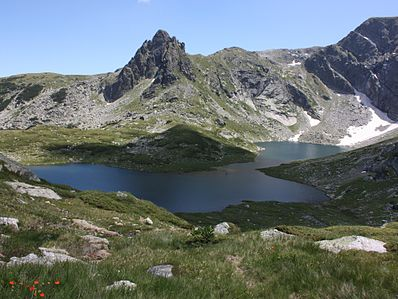

Национален парк Пирин
Разположен в най-високите части на Пирин и е най-старият национален парк в България. Паркът опазва гори от бяла и черна мура и съобщества от клек. Тук е и голям броят на ендемичните, застрашени и редки растения. Включен е в Списъка на световното културно и природно наследство на ЮНЕСКО.

Национален парк Рила
Национален парк “Рила” е разположен в Рила планина в западната част на България. Те са защитени територии от първа категория, които са образци от естествени екосистеми, с характерни и забележителни диви растителни и животински видове и местообитанията им. В парка са включени 4 резервата – “Парангалица”, “Централен Рилски резерват”, “Ибър” и “Скакавица”. Те са защитени територии от първа категория, които са образци от естествени екосистеми, с характерни и забележителни диви растителни и животински видове и местообитанията им.
